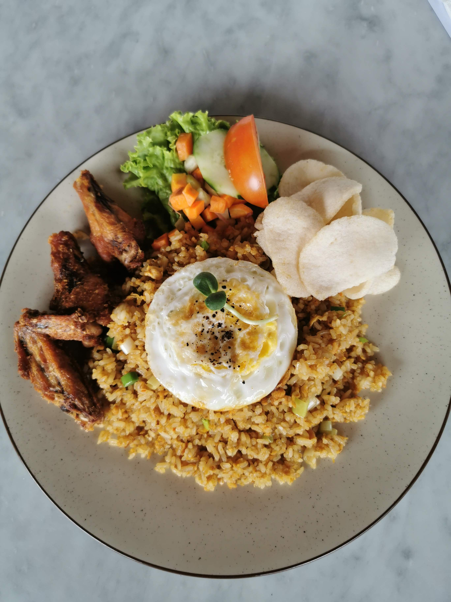

Nasi goreng is a rice dish fried with a spice paste, sweet soy sauce, and various additional ingredients such as eggs, chicken, and shrimp. This traditional Indonesian dish is famous for its savory-sweet flavor, its fragrant aroma, and its practical preparation method, which can be easily adapted to individual tastes.
Main Ingredients. Prepare 2 plates of cold white rice (last night’s leftovers, so the texture is dry) and 2 chicken eggs.
Chopped or Minced Spices. Use 4 cloves of shallots, 2 cloves of garlic, and 3 red cayenne peppers, depending on how spicy you like it.
Sauces and Seasonings. Prepare 2 tablespoons of sweet soy sauce, 1 tablespoon of oyster sauce (optional), half a teaspoon of salt, a quarter teaspoon of bouillon powder, and a pinch of ground pepper.
Oil and Garnishes. Use 2 tablespoons of cooking oil for sautéing, and sliced cucumber, crackers, and fried onions for garnish.
Prepare the seasoning. Thinly slice the shallots, garlic, and cayenne peppers, or coarsely grind all of these ingredients if you want the flavors to infuse more deeply.
Sauté the spices and scramble the eggs. Heat the cooking oil over medium heat, then sauté the spices until fragrant and slightly wilted. Push the spices to the side of the pan, add the eggs, and scramble until cooked through.
Add the white rice. Pour the cold white rice into the skillet and stir well with the eggs and the sautéed spices until there are no clumps of rice.
Add the sauces and seasonings. Pour in the sweet soy sauce, oyster sauce, salt, bouillon powder, and ground black pepper. Turn up the heat slightly, then stir quickly for 2 to 3 minutes so the seasonings are evenly distributed and the rice becomes fragrant.
Adjust the seasoning and serve. Taste the fried rice to make sure the seasoning is just right, then turn off the stove. Transfer it to a serving plate and garnish with fried shallots, cucumber slices, and crackers.